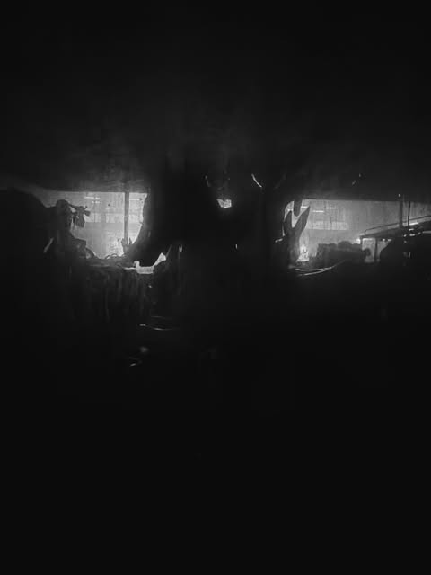

DC ×ARTIST COLLABORATIONS
Guest artists
LimitedDomus Collaborations
Small-run editions made with invited artists across image, sound and material.
Propose a collaboration ↗The Domus Cultura store
Limited photography by Ben Taleb, cultural objects, artist collaborations and weekly sound selections by Juice+.
↓
01 — Shop the first drop
Three focused collections, produced responsibly and released in considered quantities.
Small-run editions made with invited artists across image, sound and material.
Propose a collaboration ↗Gelato-ready merchandise prototypes
A focused launch capsule using products suited to local European production. Every item remains in test mode until a physical sample, regional availability and final production cost are approved.
Stacked logo · front print
Editorial slogan · front print
Monogram · centre print
Small front · large back print
Two-letter embroidery
Single-word embroidery
Large front print
Stacked logo · front print
Two-sided wrap print
Outdoor enamel print
Sample the heavyweight T-shirt, crewneck, dad cap, organic tote and ceramic mug first. Add the hoodie, beanie and enamel mug only after print, embroidery and shipping quality are approved.
Product viewer — Object study
Click a view to inspect the front, reverse and material detail before ordering.
 Fine Art
Fine ArtProduced only when ordered. The launch garment will be sampled for fabric weight, print durability and fit before checkout opens.
Unframed museum-quality giclée photograph using Gelato’s 12-colour fine-art process. One shared edition of 100 across all three sizes, with an individually numbered certificate of authenticity.
02 — Curator’s selection

Unframed · Museum-grade paper
CHF 180Unframed · Museum-grade paper
CHF 380Unframed · Museum-grade paper
CHF 700Every photograph is part of an edition of 100 in total across all sizes.
Request collector access ↗ BEN TALEB / GOOD MORNING WORLD
BEN TALEB / GOOD MORNING WORLD03 — Ben Taleb / Limited photography
Unframed black-and-white fine-art photographs, produced only after purchase through Gelato’s Fine Art Poster route on enhanced matte 200 gsm acid-free, FSC-certified paper with 12-colour giclée printing. Every image is limited to 100 numbered prints in total across all sizes.
04 — Domus Radio
A weekly hour of music, references and new discoveries. Listen here or open the Juice+ SoundCloud channel ↗
05 — Field Notes
People, gallery visits, street art, exhibitions and the ideas shaping new work.
 Exhibition detail · Art
Exhibition detail · ArtArt encounters and visual details from the places shaping culture now.
View on Instagram ↗ People · Public space
People · Public spaceFigures, gestures and reflections observed in motion.
View on Instagram ↗ Street art · Found work
Street art · Found workTemporary works, anonymous gestures and objects encountered outside.
View on Instagram ↗ Public sculpture · Sound
Public sculpture · SoundSound and civic space meet in a monumental street-side form.
View on Instagram ↗
Night culture · PeopleHuman silhouettes, light and atmosphere from a shared nocturnal space.
View on Instagram ↗ City detail · Colour
City detail · ColourA small accidental composition where colour interrupts the street.
View on Instagram ↗ Architecture · Urban systems
Architecture · Urban systemsConcrete, steel and repetition read as an abstract city drawing.
View on Instagram ↗Open call / Artists
Domus Cultura accepts rolling submissions for editorial features, studio visits, events and future collaborations.
Submit your practice ↗06 — Events
Pop-ups, gallery visits, atelier conversations and listening sessions. The first Domus Cultura programme is currently in development.
Register interest ↗